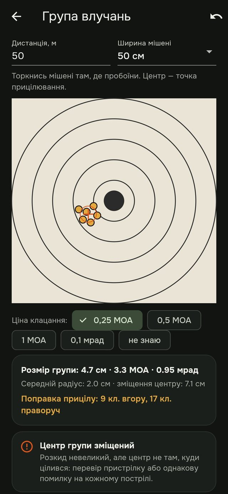
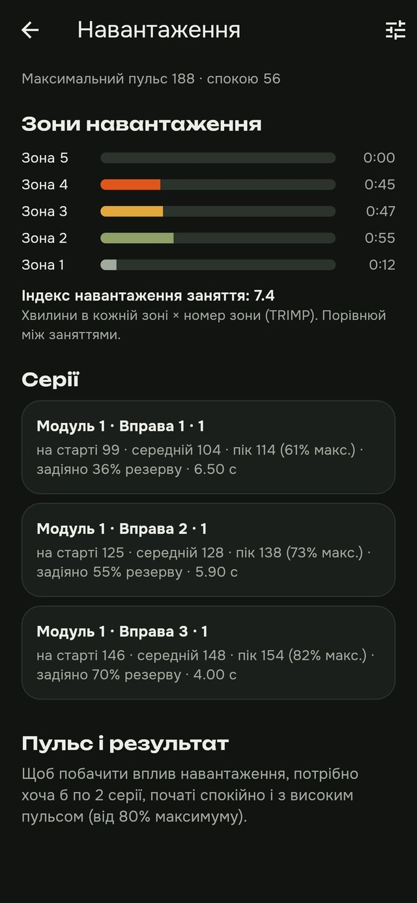
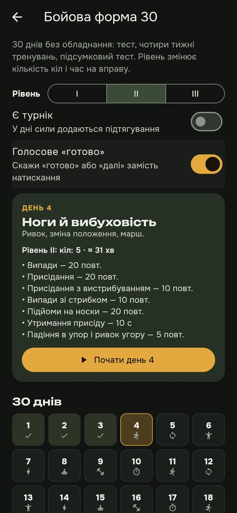
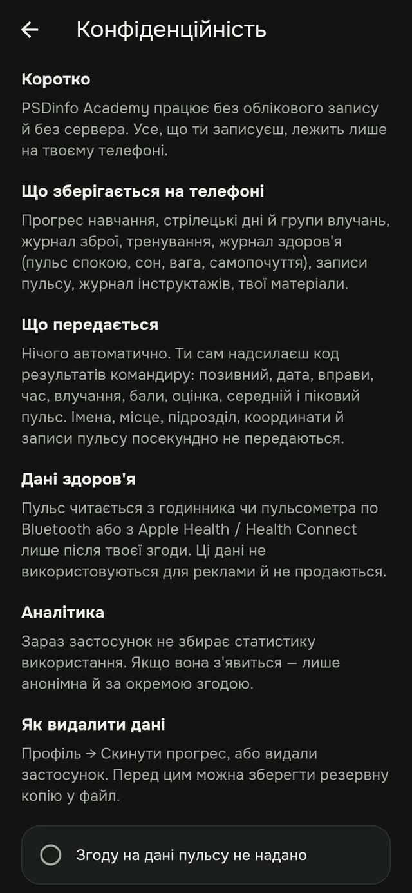

Orizo × PSDinfo
У розробці · версія 0.7PSDinfo Academy
Кишеньковий інструктор для військових і тих, хто готується: навчає, веде тренування, аналізує результат і підказує наступний крок. Методика STS і український досвід — навіть без інтернету.
Чому це потрібно
Інструктор поруч не щодня
Навчатися й тренуватися треба постійно, а досвідчених інструкторів на всіх не вистачає. Застосунок щодня веде за програмою.
Результат не губиться
Час, влучання, пульс і навантаження записуються в застосунку, а не в блокноті. Видно прогрес і те, що варто виправити.
Безпека даних — питання життя
Позивні замість імен, усі записи лише на телефоні. Місця й підрозділи нікуди не передаються.
Як це виглядає
Справжні екрани робочої версії з демонстраційними даними.




Сім дисциплін
Кожна дисципліна: модулі → уроки → тест. Зміст перевіряють інструктори PSDinfo.
- 01
Вогнева підготовка
Методика STS, теорія, журнал інструктажу з техніки безпеки
- 02
Тактична підготовка
Теми визначені, уроки готуються
- 03
Тактика малих груп
Курс «Дії групи»: 10 уроків і 29 схем
- 04
БПЛА
Курс «Основи»: 5 уроків з тестами
- 05
Тактична медицина
«Основи»: 4 уроки, схеми й картки
- 06
Маскування
«Бути непомітним»: 5 уроків і схеми
- 07
Література
Бібліотека, доступна офлайн
Що робить його особливим
Цифровий інструктор
Бачить помилку в результатах і пропонує конкретну вправу.
Бойовий пульс
Як змінюється результат під навантаженням: дані з Garmin чи Apple Watch.
Готовність підрозділу
Один екран для командира: хто готовий, хто відстає.
Перевірені результати
Іспит з інструктором і сертифікат; згодом — акредитація за ISO/IEC 17024.
«Бойова форма 30»
Власна програма фізпідготовки на 30 днів із тестами на старті й фініші.
Без рук
Голосом «готово» — у рукавицях, на полігоні, в залі.
Free · Pro · Team
Free
Безпека — безкоштовно для всіх: теорія, техніка безпеки, перший модуль STS, основи БПЛА, бібліотека.
Pro
Підписка: усі модулі STS, аналіз результатів, пульс і навантаження, «Бойова форма 30», іспит і сертифікат.
Team
Ліцензія для підрозділу чи навчального центру: режим інструктора, таблиця команди, готовність підрозділу.
Для кого
Військовослужбовці
Щоденна підготовка між завданнями, за програмою й з аналізом.
Ті, хто готується до служби
Базові знання й фізична форма ще до навчального центру.
Інструктори й підрозділи
Журнал інструктажу, таблиця команди й звіти без витоку даних.
Армії країн-партнерів
Український досвід зрозумілою мовою: UA, EN, LT, далі PL і DE, терміни НАТО.
Лише освіта й захист. Зміст перевіряють інструктори PSDinfo, а дані тренувань залишаються на телефоні.